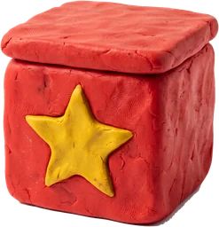
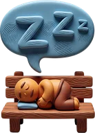

Dean's Selfie Stick Squad wins!
112 VP after five Hours. Sam and Medium Bot tied on 104 - Sam takes second on the tie-break.
2 SamHuman104
SamHuman104
SamHuman1041
 DeanHuman112
DeanHuman112

DeanHuman1123 Medium BotMedium bot104
Medium BotMedium bot104
Medium BotMedium bot104| Rank | Player | Celebrities | Achievements | Pass card | Selfie Exchange | Swag and Club | Where it came from | Total |
|---|---|---|---|---|---|---|---|---|
| 1 | Dean HumanSelfie Stick Squad |
588+26+9+6+9 | 335+4+6+ 6×3 | 9 | 612 Selfies → 3×2 | 6 | 112 | |
| 2 | Sam HumanSilver Screen Society · wins the tie-break |
4910+11+12+8+8 | 388+6+3+ 7×3 | 7 | 48 Selfies → 2×2 | 6 | 104 | |
| 3 | Medium Bot Medium botRetro Gaming Guild |
6112+5+20+12+12 | 246+3+ 5×3 | 12 | 25 Selfies → 1×2 | 5 | 104 | |
| 4 | Easy Bot Easy botOtaku Alliance |
388+3+10+9+8 | 183+ 5×3 | 8 | 49 Selfies → 2×2 | 3 | 71 |
CelebritiesAchievementsPass cardSelfie ExchangeSwag and Club
Tie-break: the tied player closest to the First Player marker, clockwise, at the end of Hour 5 wins (the First Player counts as closest). Last Achievement scored ×3; leftover coffee scores nothing.
Game stats

4 of 5Hours where Medium Bot passed first and took the 2 coffee bonus